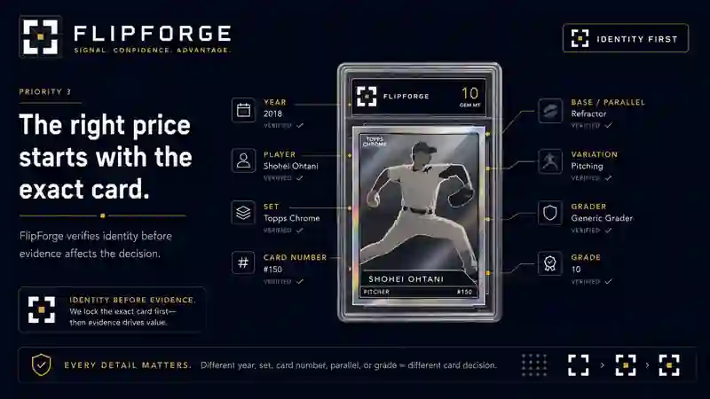
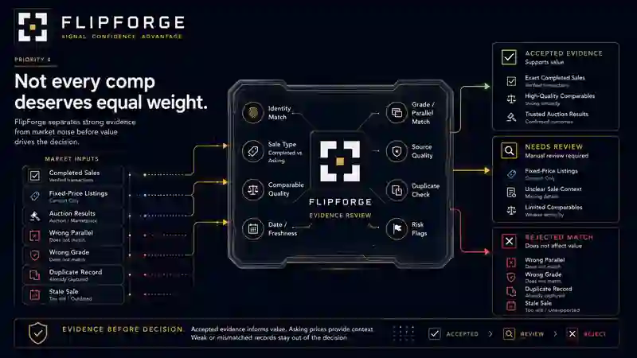
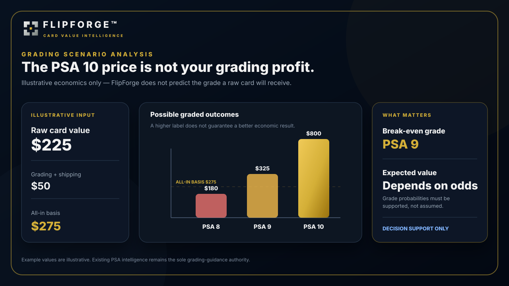

Same player and set does not mean the same card market.
CARD INTELLIGENCE
Before you buy. Know Why.
You are the one putting money on the line. A convincing comp can still be the wrong reason to buy.
Decision support only; no transaction, grade, outcome, or profit guarantee.
FlipForge decision checkAnalyzing evidence
Last comp$900
vs.Listing$850
$50 under comp. Easy buy — or is it?
01
IdentityParallel mismatch detected
Check02
Evidence2 of 3 records cannot support the target
Filter03
RiskThe apparent $50 edge is unsupported
Reassess04
DecisionVERIFY before buying
ProtectedWhat changed?The listing price did not. Your confidence should.
THE ENEMY IS FALSE CONFIDENCE
A price can look precise and still be wrong for the card in front of you.
One precise sale is still one observation.
Best-case PSA upside is not the expected outcome.
SEE THE INTELLIGENCE
The decision should be visible, not buried in a paragraph.
FlipForge turns identity, evidence and grading economics into a reason trail you can inspect before money leaves your account.



BUSTED COMP · INTERACTIVE
Which sale actually deserves to count?
Three records can look close enough on a search screen. FlipForge asks whether they belong to the exact card before any price gets a vote.
Choose a sale. See whether FlipForge would let it influence the decision.
Trust has to be earned
We test the evidence process before asking you to trust performance claims.
FlipForge is building proof around evidence discipline and later outcomes—not a marketing accuracy number invented before the sample exists.
Identity, grade, parallel, sale status, price, date and duplicate handling reviewed.
Records that cleared the evidence rules remained eligible to support Card Intelligence.
Questionable or ineligible records stayed out instead of being forced into the result.
Failures stayed visible rather than disappearing behind a precise-looking number.
Decision accountability
Did the decision age well?
The original reasoning stays fixed. Later evidence tests it. The point is calibration—not rewriting history to make the model look right.
Lock the original call.
Preserve the decision, confidence, evidence quality, risk and reason trail.
Check early signals.
Review what changed without moving the original goalposts.
Stress the thesis.
Compare evidence strength, liquidity and risk with the developing outcome.
Grade the call.
Preserve what held, what missed and where uncertainty was appropriate.
Current beta recruiting focus
Modern football rookie autos + scarce parallels
FlipForge remains Card Intelligence for sports cards broadly. We are starting narrow so parallel identity, thin evidence, grade premiums and scarcity context can be tested deeply.
See Private BetaControlled Private Beta
Bring us the card you are actually thinking about buying.
Challenge the identity, the comps, the premium and the reasoning before your decision becomes your money.
No credit card required. Private beta participation does not create a paid subscription.